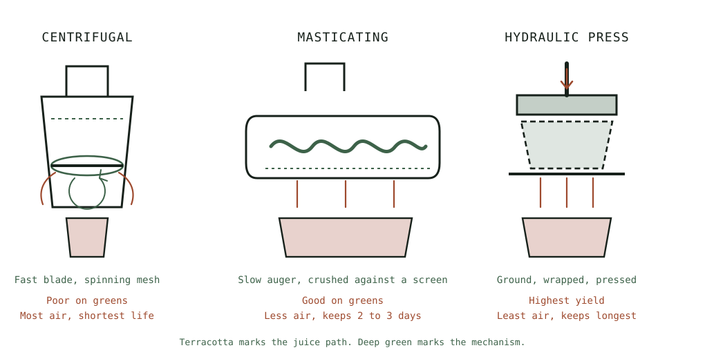

Guide
Cleaning a Juicer in Two Minutes
The sequence that turns a ten minute chore into a two minute one, on any machine, without changing anything you own.
As an Amazon Associate this site earns from qualifying purchases. Links to products may be affiliate links. This costs you nothing extra and does not change what gets recommended. Nothing here is medical advice.
Cleaning is the habit that decides whether a juicer stays on the counter. Everything else about juicing is enjoyable. This is the part that has to be made small.
The good news is that it is almost entirely a matter of sequence rather than effort or equipment. The same machine, cleaned in the right order, takes a fifth of the time.

The one rule that matters
Rinse before you drink, not after.
That is the whole technique, and everything below is detail. Wet pulp rinses off in seconds. Pulp that has dried onto a screen has to be soaked and scrubbed, and the drying starts within a few minutes.
Take the machine apart the moment it stops. Rinse. Then sit down with the glass. The juice does not suffer from a two minute wait, and the screen suffers enormously from a twenty minute one.
People who find juicing a chore have almost always inverted this order. They drink first, which is the natural thing to do, and by the time they return to the sink the job has quadrupled.
The sequence
One. Disassemble while the parts are wet. Most machines come apart in four or five pieces. Do it immediately, before anything has a chance to set.
Two. Empty the pulp bin straight away. Into the compost, or into a container if you are keeping it. A pulp bin left to sit is the part that smells.
Three. Rinse the screen from the outside in. This is the technique that saves the most time. Hold the screen under running water so the flow pushes pulp out of the mesh rather than driving it deeper. Rinsing from the inside packs the mesh tighter with every pass.
Four. Brush the screen while it is under the water. The brush that shipped with your machine is shaped for its screen. Ten seconds of brushing under the tap does what two minutes of scrubbing a dry screen cannot.
Five. Rinse everything else. The auger, chamber, chute, and jug need nothing more than water at this stage.
Six. Stand it on a rack to air dry. Faster than towelling, and juicer parts assemble more easily dry than damp.
Six steps, about two minutes, and no washing up liquid needed for a daily clean.
Keep the brush beside the machine
A brush in a drawer is a brush you will not fetch, and this trivial detail accounts for a surprising share of abandoned juicers.
Put it in a jar next to the machine along with a small washing up brush. The whole routine should be reachable without opening anything.
Use the brush that came with the machine rather than a sponge. Screens are conical or cylindrical with fine perforations, and a flat sponge cannot reach into that geometry. A sponge on a juicer screen is the wrong tool applied with effort.
The parts that actually trap residue
The screen or strainer. The main event, covered above. Fine mesh traps the most and is hardest to clear.
The pulp outlet. A narrow channel where pulp exits. It packs solid if left, and a quick push with the brush handle clears it.
The rubber seal or wiper. Most machines have a silicone piece that seals the chamber. Pull it out and rinse behind it. Skipping this is the most common source of a machine that smells despite looking clean.
The chute and hopper. Usually easy, occasionally holds a fibre from a stem.
The jug lid and froth separator. These live in the sink queue rather than the juicer routine and are frequently forgotten.
Set the machine up so cleaning stays quick
Where and how the machine lives determines how much friction the routine carries, and three arrangements make a real difference.
Put it near the sink. Every stage of juicing involves water, both washing produce before and rinsing components after. A machine on the far side of the kitchen adds a carrying step to both ends of the routine, twice a day. This sounds trivial and it is the difference between a two minute job and a two minute job you avoid.
Leave it assembled. A juicer that has to be retrieved from a cupboard and put back adds two steps to every glass. A machine standing ready on the counter gets used. If counter space genuinely does not allow it, that is a real constraint and it argues for a more compact machine rather than for willpower.
Give it a small drying rack. A dedicated rack or a folded tea towel beside the machine means wet parts have somewhere to go without competing with the dinner washing up. Parts that dry properly reassemble easily and develop no stale smell.
Two smaller things help. Keep a second screen if your machine takes one, so a batch is never delayed by a screen that is still drying. And keep a jug of water beside the machine while juicing, so you can run a little through at the end, which loosens everything before disassembly and costs five seconds.
None of this is about buying anything. It is about removing the small frictions that turn a short routine into one you put off, and putting off the rinse is the only thing that makes juicer cleaning genuinely hard.
The weekly deep clean
Daily rinsing keeps things fine. Once a week, a slightly longer version prevents the slow buildup that daily rinsing misses.
Wash all removable parts in warm soapy water with the brush. Pay attention to the seal, the pulp outlet, and the underside of any lid.
For mineral staining, particularly on carrot and beetroot heavy routines, soak the screen in a solution of warm water and white vinegar for fifteen minutes and then brush it. This lifts both the mineral film and the orange staining that carrot leaves on plastic.
Check the screen for damage while you are there. A mesh with a torn section will let pulp through into your juice and cannot be repaired.
When it still smells
A machine that smells despite a good daily routine has residue somewhere you are not looking, and the culprit is nearly always one of three places.
Behind the rubber seal. Most machines have a silicone wiper or gasket sealing the chamber. It pulls out, and what is behind it is rarely pleasant on a machine that has never had it removed. This is the first place to check and it solves most cases.
Inside the pulp outlet. A narrow channel that packs solid and dries. Push the brush handle through it.
Under the base or in the drip channel. Juice runs down the outside of most machines and collects somewhere. Wipe the body, not only the removable parts.
If all three are clean and the smell persists, soak the removable parts in warm water with a little white vinegar for twenty minutes, then rinse and dry fully. Persistent smell in plastic is usually mineral and pigment film rather than anything organic.
Drying properly matters as much as washing. Parts stored damp in a closed cupboard develop a stale note that no amount of rinsing fixes.
Hard water
In hard water areas, scale builds on screens and in any machine with a pump.
A monthly vinegar soak handles the screen. For any machine with a water circuit, follow the manufacturer's descaling schedule rather than improvising, since that schedule is the difference between a long lived machine and a short lived one.
Drying parts fully rather than leaving them damp also slows deposit formation noticeably.
What to look for when buying
If cleaning is the thing that has stopped you before, some design features genuinely matter and are worth prioritising over headline specifications.
Strainer-free chamber designs. Some newer masticating machines dispense with the fine screen entirely, which removes the hardest component from the routine. Look at a compact strainer-free slow juicer for the compact version of this approach.
Fewer parts. Every component is another thing to rinse, dry, and reassemble. Horizontal masticating designs tend to have fewer than vertical ones.
Coarse rather than fine screens. A coarse strainer clears far more easily. Some machines ship with both so you can choose. a self-feeding horizontal cold press juicer is one of these.
A wide pulp outlet. Narrow outlets pack solid.
Centrifugal machines are the hardest to clean in this category, because the fine conical basket is intrinsic to how they work, as the juicing hub explains. That is a real tradeoff against their lower price and higher speed, and the machine comparison sets it against the other differences.
RUN THE NUMBERS
Illustrative timings, and they will vary with your machine.
| Approach | Realistic time |
|---|---|
| Rinsed immediately, brushed under water | About 2 minutes |
| Rinsed after drinking the glass | 5 to 8 minutes |
| Left until the evening | 10 minutes plus soaking |
| Weekly deep clean with soap | About 6 minutes |
| Monthly vinegar soak | 15 minutes, mostly unattended |
For comparison, cooking an ordinary dinner generates considerably more washing up than a daily juice does. The perception that juicing is a cleaning burden comes almost entirely from doing it in the wrong order.
WHAT GOES WRONG
A screen that will not come clean. Dried pulp. Soak in warm water for ten minutes, then brush from the outside. Prevent it next time by rinsing first.
A machine that smells despite looking clean. The rubber seal. Pull it out and rinse behind it.
Pulp in the juice. A damaged screen. Inspect for tears; this is not a cleaning problem.
Orange staining on plastic parts. Carrot. Cosmetic. A vinegar soak reduces it and it will return.
Parts that will not reassemble. Usually damp. Let them dry fully.
DO THIS NOW
- Move the brush from the drawer to a jar beside the machine today.
- Tomorrow morning, rinse every component before you sit down with the glass. Time it.
- Rinse the screen from the outside in, under running water, with the brush.
- Pull out the rubber seal and rinse behind it, which you have probably never done.
Next
If your machine is the constraint rather than your routine, masticating or centrifugal covers which designs clean quickly and which never will.
The pulp you are emptying twice a day is worth more than the bin. What to do with juice pulp covers which kinds are worth keeping and what to make with them.